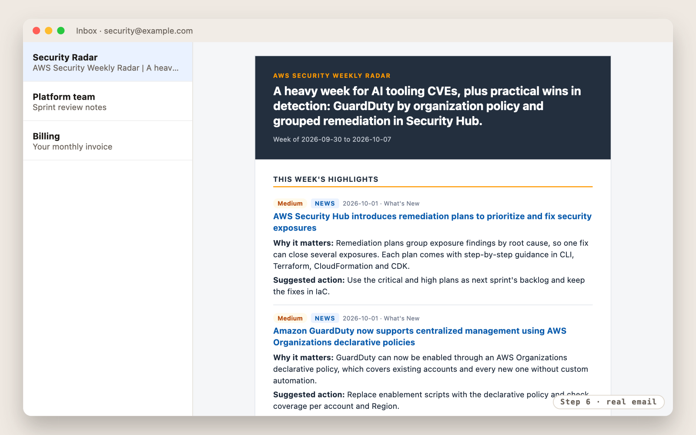
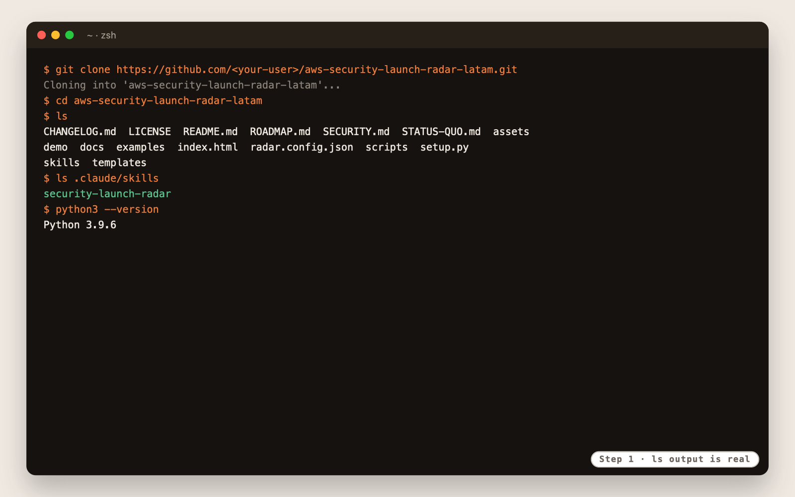
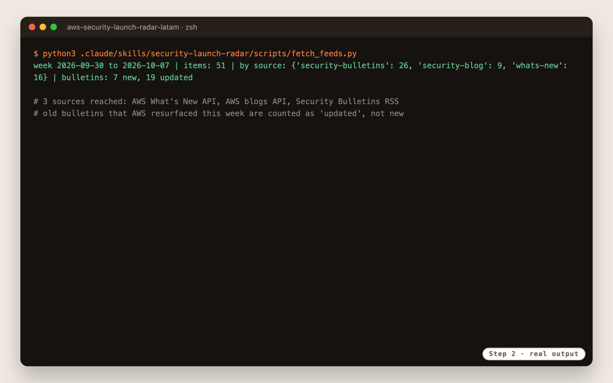
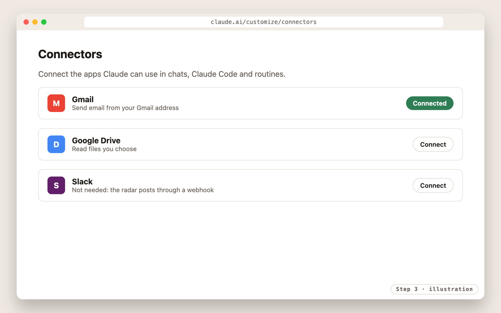
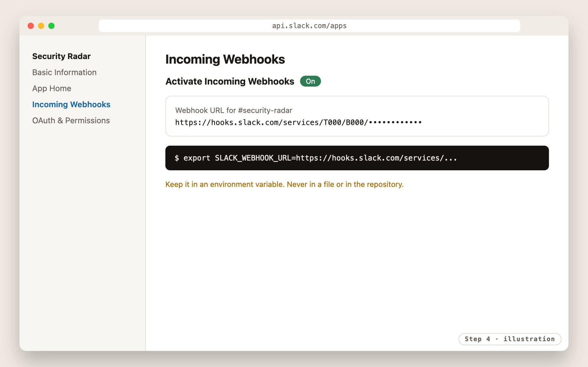
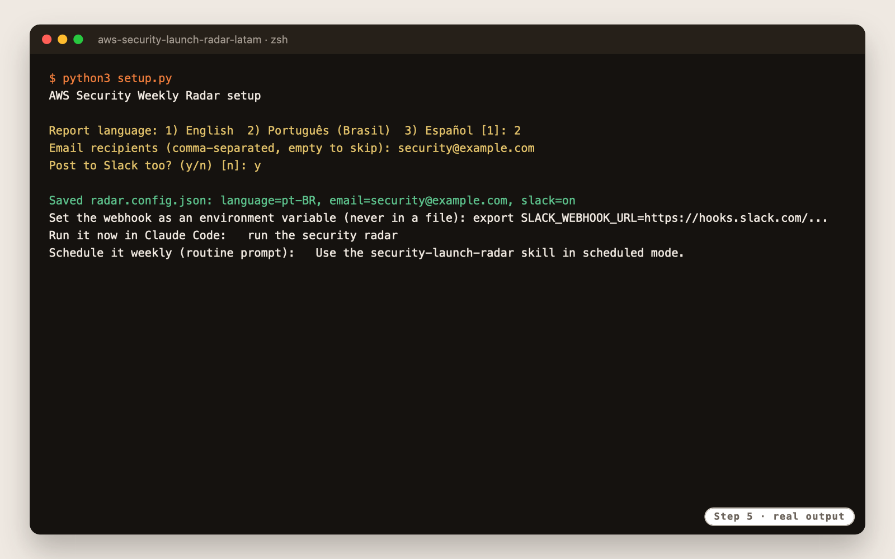
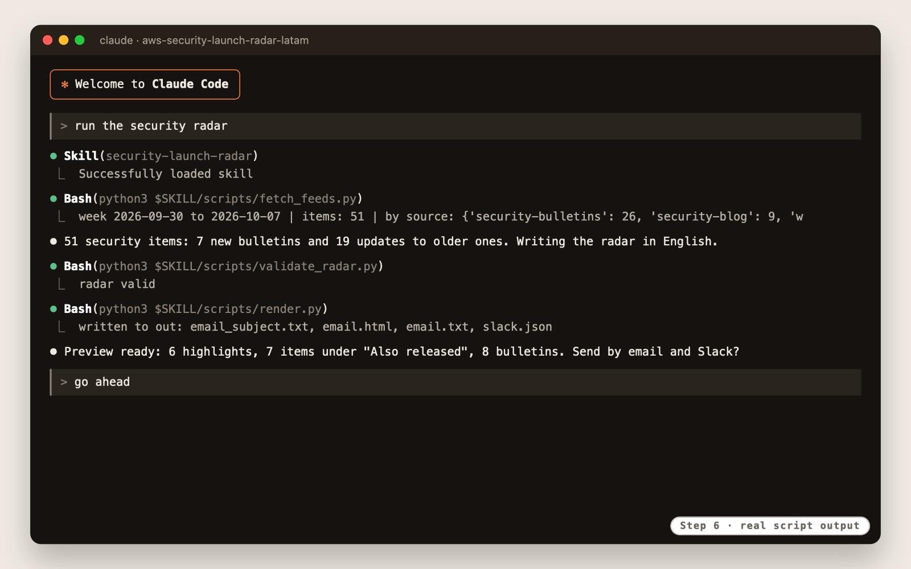
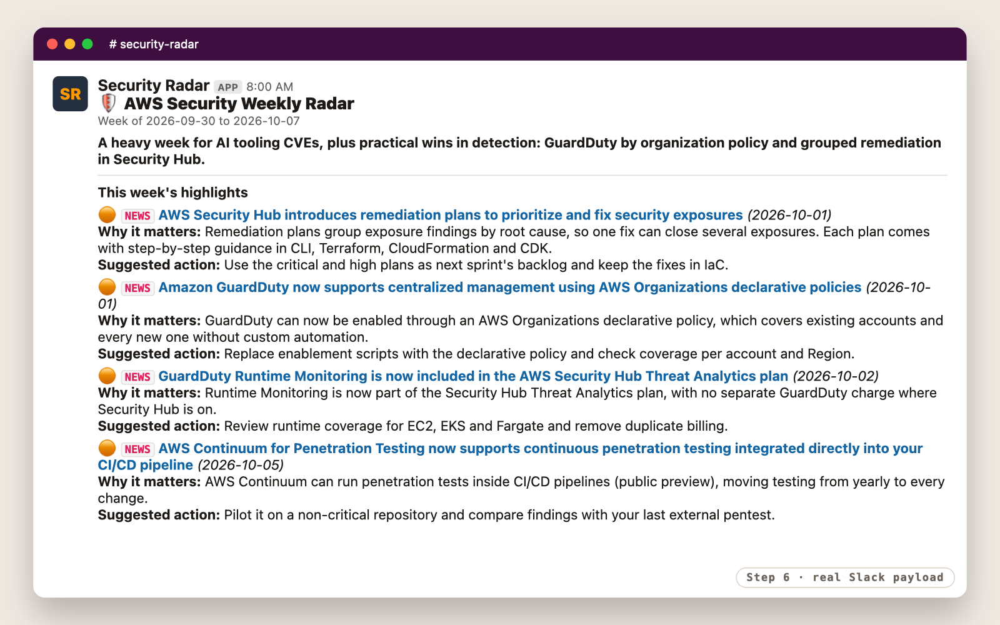
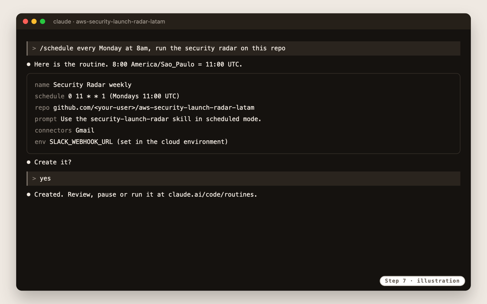
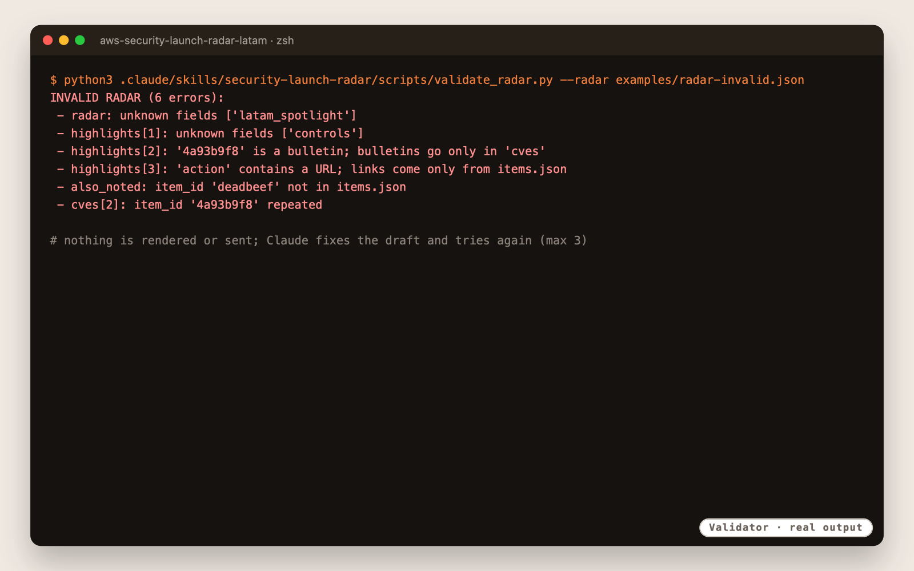

AWS shipped it. Claude read it. Your team got the brief.
A Claude Code skill that reads the last 7 days of AWS security news with three curator agents in parallel and an independent reviewer, then sends one short review by email and Slack, in English, Portuguese or Spanish, and adds the week to your launch tracker site. The agents choose and explain; the scripts guarantee the facts.
How it works
Six steps. Only the agents write, and a script checks them.
Titles, dates and links come straight from AWS. Three Claude subagents curate in parallel, a fourth that did not write the radar reviews it, and a validator checks it again before anything is rendered, sent or published.
Last 7 days of What's New, security blogs and bulletins
radar-curator, in parallel, one lane each
threatsidentitydata-networkradar-reviewer checks every claim against the items
Only real items, no links in text, bulletins in their place
Email, Slack message and a LinkedIn post
Gmail and Slack after a preview; the week pushed to your tracker site

Every item says where it came from: a What's New launch, a blog post, or an older bulletin that AWS updated this week.
Set up once · about 15 minutes
Five steps, then it runs by itself.
Get your private copy
Use this template, set the new repository to private, clone it. Claude Code finds the skill in .claude/skills/.
$ git clone https://github.com/<your-user>/aws-security-launch-radar-latam.git

Check the sources
fetch_feeds.py reaches AWS What's New, the security blogs and the bulletins. Old bulletins resurfaced by AWS are counted as updates, not as new.

Connect Gmail
Once, at claude.ai/customize/connectors. Claude Code and the routine both send through it.

Create a Slack webhook (optional)
A Slack app with Incoming Webhooks, one channel. The URL lives in an environment variable, never in a file.
$ export SLACK_WEBHOOK_URL=https://hooks.slack.com/services/...

Choose the language and recipients
Three questions. The whole report follows the language: en, pt-BR or es.
$ python3 setup.py --language pt-BR --email security@example.com --slack

Use · every week
One request, or no request at all.
Run the security radar
In Claude Code, from the repository folder. You get a preview, and nothing is sent until you confirm.
> run the security radar


Schedule it every Monday
A Claude Code routine runs it in scheduled mode: no questions, sends on its own, and explains any failure in the run summary.
Use the security-launch-radar skill in scheduled mode.

Keep your tracker site current (optional)
Point the radar to your clone of the AWS Security Launch Tracker. Each run writes the week's launches to data/weeks/wNN.json, commits and pushes, and GitHub Pages republishes. Interactive runs ask before pushing.
$ python3 setup.py --language pt-BR --email security@example.com --tracker ../aws-security-trackerYour team's language
The same week, three ways.
Trust by design
If it does not match the week, it is not sent.
| Shown in the report | Comes from |
|---|---|
| Titles, dates, links | AWS sources, via fetch_feeds.py |
| Severity, CVE IDs | The bulletin itself |
| NEWS, BLOG, UPDATED | The item's source and bulletin number |
| Headline, why it matters, action | The curator agents, checked by radar-reviewer and validate_radar.py |
| Tracker site entries | AWS What's New, via export_tracker.py; nothing written by the model |

Show your team
A 20-minute demo, ready to present.
Roadmap
One thing well, then the rest.
Target dates for a single part-time maintainer. External reviews (open source, legal) set the pace.
Three languages, email and Slack, validator. Pilot Oct 12 to Nov 9.
Keeps each week's bulletins, since AWS publishes only about 30 days.
Monthly, quarterly, YTD and custom dates, with checked numbers.
The same radar from Kiro, with an agent-neutral core.
Personas, company services, filters, "affects you" in the CVE table.
LGPD, CMN 4,893 / BCB 85 and PCI DSS, after legal review.
Mexico, Colombia and Chile catalogs; opt-in discovery of services in use.
FAQ
When something does not go as expected
Claude does not use the skill
Start claude from the repository folder, where .claude/skills/ lives.
Old bulletins show up
AWS sometimes updates old bulletins with a new date. They appear tagged UPDATED, after the new ones, and only when relevant.
Nothing was sent
The validator failed three times, or the Gmail connector or the webhook is missing. The run summary says which.
Can I get a monthly report, or only GuardDuty?
Not in the MVP. Periods arrive in v0.2 and service filters in v0.3; see the roadmap above.
Where does my data go?
Nowhere new. Email goes through your Gmail connector, Slack through your webhook, and your settings live in your private copy.